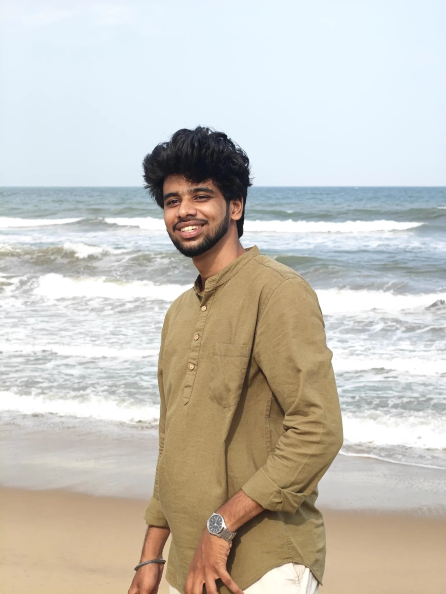
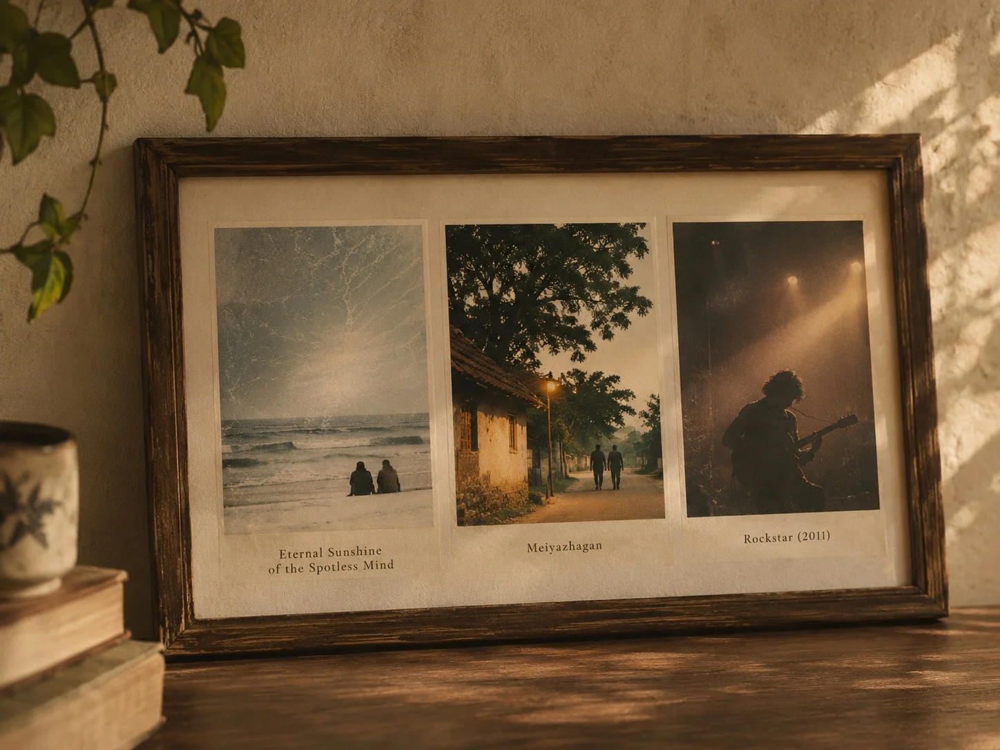
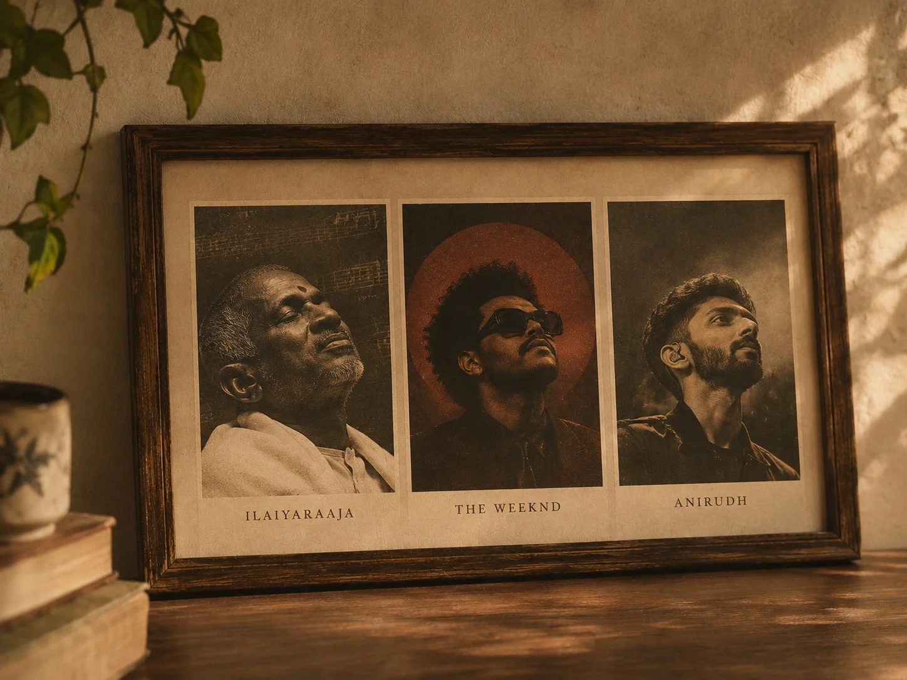
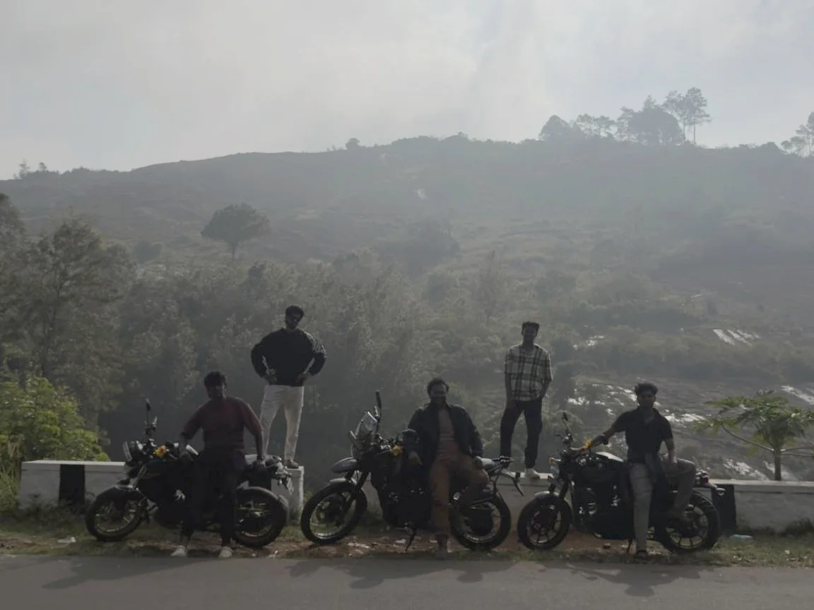
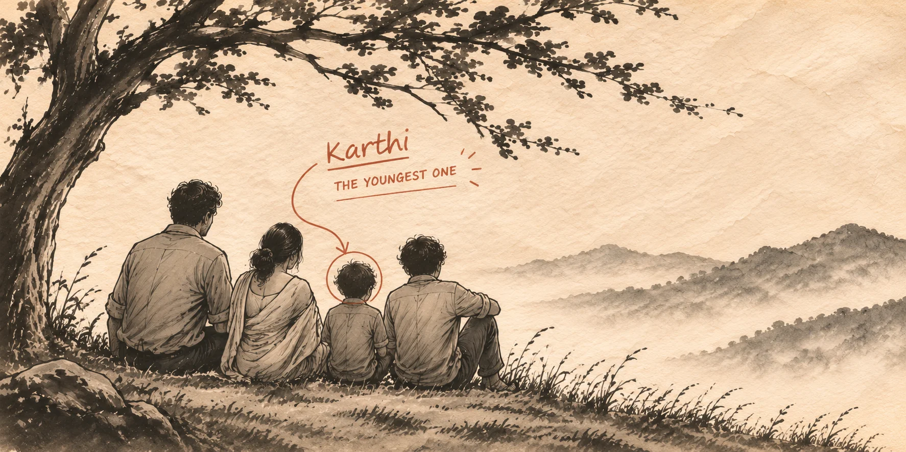
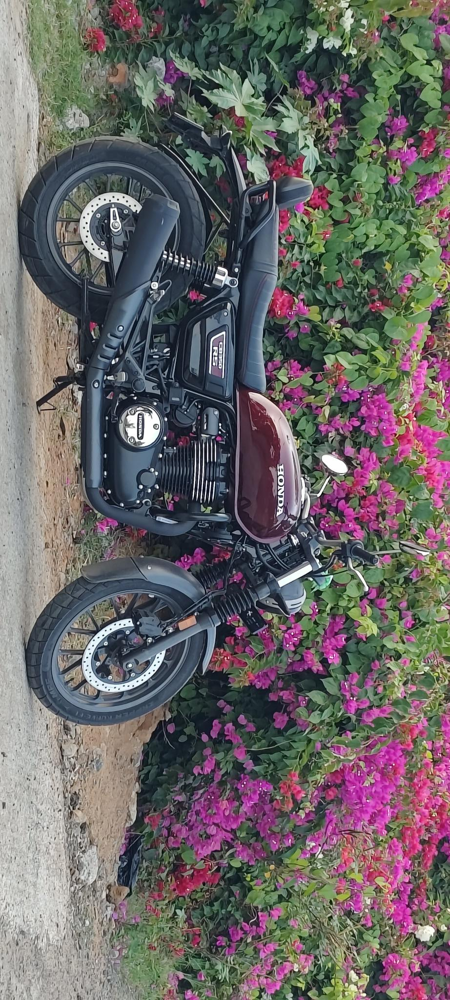

THE BEGINNING
Rooted in Cuddalore
Born and brought up in Cuddalore. The place where my story began and where my schooling years took shape.
Tamil Nadu, India
Learning · Experiencing · Becoming
02 — THE PATH SO FAR
The experiences that brought me here, and the lessons that continue to influence where I go next.
THE BEGINNING
Born and brought up in Cuddalore. The place where my story began and where my schooling years took shape.
Tamil Nadu, IndiaTHE COLLEGE YEARS
B.E. in Computer Science and Engineering at St. Joseph’s Institute of Technology, Chennai.
Chennai, IndiaA PARALLEL CHAPTER
Internship experience alongside my college years, gaining practical exposure to professional work.
PRESENT DAY
Currently working at PSIog Private Limited, continuing to learn, explore and build practical skills.
Current role03 — SELECTED WORK
A collection of things I have built, explored and helped improve.
AI · SECURITY REPORTING
An AI-assisted approach to turning vulnerability findings and scanner outputs into structured penetration-testing reports, with scoring and remediation guidance.
Security testing · Report generation · AI assistanceDEVELOPER TOOLING · SECURITY
A VS Code security-scanning extension built around deterministic, rule-first findings, with AI-assisted explanations acting as an advisory layer.
JavaScript · Node.js · VS Code extensionAI AGENTS · QUALITY ENGINEERING
A unified agent workflow for quality engineering, including the PB Shift use case, supporting test preparation and automation from business requirements and PowerBuilder-related inputs.
Agent workflows · Requirements · Test automationFULL STACK · PERSONALISATION
A MERN-stack application designed to provide personalised travel recommendations based on interests, budget and travel preferences.
MongoDB · Express · React · Node.js04 — THINGS THAT STAY WITH ME
The sounds, stories, pages and places that make up the person behind the work.
BETWEEN PAGES
Stories of resilience, wandering and identity, alongside ideas that challenge how we understand ourselves and the world.

STORIES ON SCREEN
Emotionally layered stories, imperfect characters, nostalgia, memory and the choices that shape people.

SOUNDTRACK
Soulful melodies, atmospheric alternative sounds and energetic rhythms, depending on the moment.

SOMEWHERE ELSE
Scenic roads, unfamiliar places, shared rides and the quiet perspective that comes from being somewhere new.
05 — MY CONSTANTS
The people, memories and moments that make a place feel like home.

A NOTE ABOUT HOME
I'm the youngest of two children, growing up in a family that has shaped much of who I am.
My brother has built his own professional path, while my father works in the private sector. At the heart of our home is my mother, a homemaker whose care and presence create the warmth and sense of belonging that hold us together.
06 — MOMENTS COLLECTED
The road, the page and ideas worth spending time with.

THE OPEN ROAD
Quiet roads, open landscapes and a little perspective along the way.
MADE BY HAND
Slowing down, observing details and translating what I see onto paper.
IDEAS IN MOTION
Exploring metacognition, spirituality and how technology-minded people approach ideas.